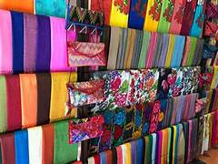
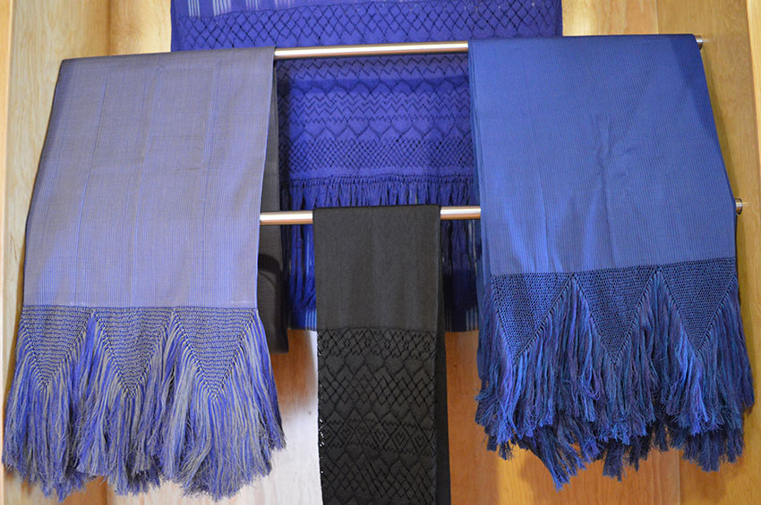
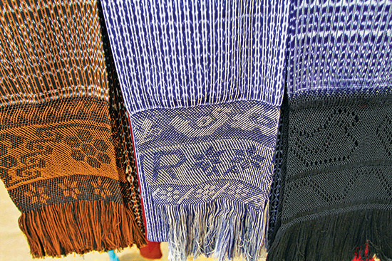
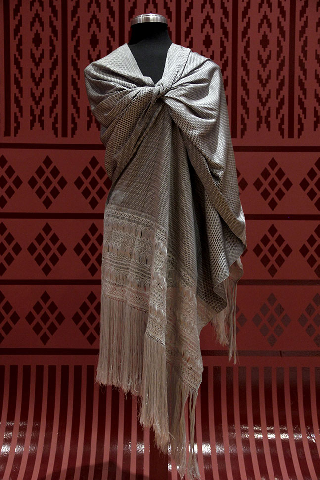
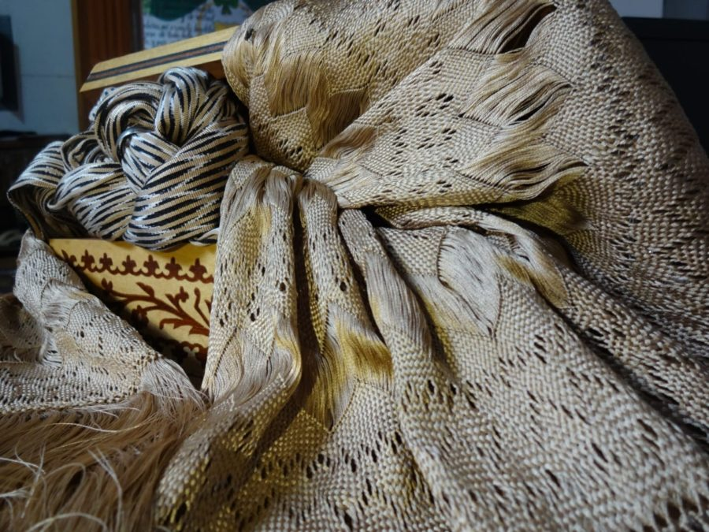
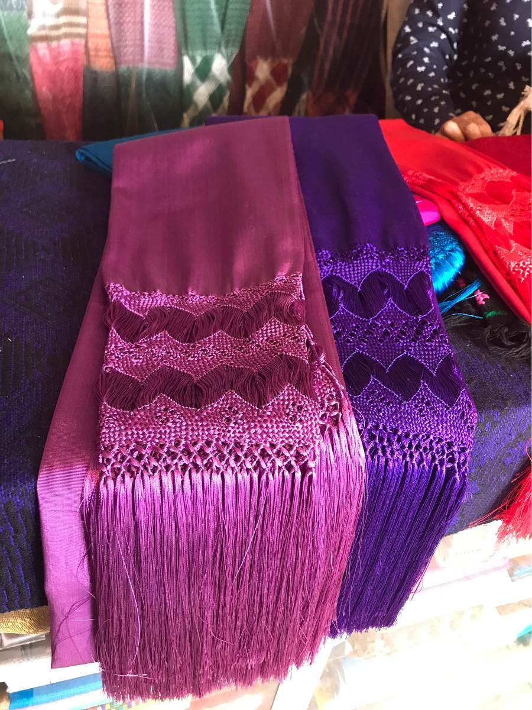

Explora nuestra colección
Esta galería destaca la belleza y diversidad de los rebozos mexicanos, elaborados artesanalmente con técnicas tradicionales. Cada pieza cuenta una historia única.

Rebozo floral
Diseño inspirado en flores tradicionales de Oaxaca.

Rebozo en tonos índigo
Teñido con técnicas naturales y tintes orgánicos.

Rebozo bordado
Detalles hechos a mano por artesanas de Tenancingo.

Rebozo moderno
Fusión de tradición y diseño contemporáneo.

Rebozo de seda
Suaves y ligeros, con un brillo natural.

Rebozo de artisela
Similar a la seda, pero con un acabado sintético.